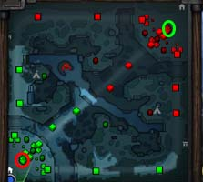
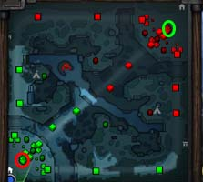

Welcome to Doto, well actually you guys have gotten a lot better. I've been happily forced to rewrite my guide because the problems of the new Doto 2 player are very different from the problems of the Doto 1 player when I originally wrote the guide in 2011. In short, the tools that Valve provided and the learning resources that the community has created are very different than they were in the past. I also think that I can write a better guide now than I could then.
Before we start, I just want to thank you for taking a chance on this game. It takes a long time to refine your skills and learn, but that's often the most rewarding part about playing Doto 2. If you're here because your friends want you to play with them, then the social aspect makes learning easier as friends fix your new player mistakes, or at least give you a foundation that will help you see and correct your errors. Lets see if we can keep those to a minimum.
Doto 2 is a team-oriented game pitting two teams of five players against each other. You win the game by destroying the enemy's Ancient building before they destroy yours. The Ancient is the largest building and is centrally located in each team's main base.
At the start of the game every hero is weak, with no experience (exp) and little gold. Experience gives you additional levels, allowing you to unlock or upgrade your skills and build a Talent Tree. Gold buys you items that improve your hero in a variety of ways, like running faster, dealing more damage, and gaining the ability to cast unique spells.
Your goal is to spend your time gaining exp and gold as fast as possible, or assisting your team in doing so, while limiting and reducing your opponents' exp and gold gain. If you gain a significant exp and gold advantage by the later stages of the game it usually allows your team to destroy all heroes in your path, followed by their defensive towers and buildings, and ultimately killing the enemy Ancient, winning you the game. How you go about doing this is playing Doto.
Lets start off with some more basics.

 

Each player controls a unique Hero out of a pool of 115. Unlike many other similar games, Doto 2 only allows there to be 1 of a specific hero in a game. Each hero has unique stats, Spells, and Talent Trees. Heroes start at level 1 and max out at level 25. Every level until 19 grants a Skill Point which can be used to unlock or upgrade spells or add a branch to your Talent Tree.
A hero's stats include all basic elements of a hero and its attributes. The elements are the base: attack time, damage, HP, mana, armor, magic resistance, attributes, and move speed. Attributes are the Strength, Agility, and Intelligence of the hero. Each hero has its own base attributes and attribute gain per level, and each attribute provides certain bonuses. Strength is HP, HP regen and magic resistance, Agility is attack speed, movement speed and armor, and Intelligence is mana pool, mana regen and spell damage amplification. Heroes are divided into overarching categories based on their "Primary Attribute." Heroes usually gain more of their primary attribute than the others, and each point of the primary attribute also gives the hero 1 attack damage. These factors means that Strength heroes are usually better at surviving damage (are tanky), Intelligence heroes are more able to keep casting spells, and Agility heroes have great attack speed and armor.
A hero's spells (aka skills or abilities) are the biggest part of its strengths and weaknesses, each with its own mana cost, cooldown, and effects. Most heroes has three basic spells and one Ultimate. As mentioned before, these spells are upgraded by skill points gained on level. Ultimate abilities, being the most powerful, can only be learned at level 6 and upgraded at levels 12 and 18 (in most cases).
Each hero also has a unique Talent Tree. At levels 10, 15, 20, and 25, two branches of the tree will unlock. When you choose one of the talents with a skill point, you gain its effects but miss out on the other talent. Effects vary widely, with some heroes able to pick up attack damage, HP, cast range, or even unique upgrades to their spells. The talent tree is used to adapt to the way each specific game is going. For example, against a lineup consisting of physical damage dealers you may choose an armor talent over magic resistance.
The combination of a hero's stats, attributes, spells, and talent tree gives that hero unique strengths, weaknesses, and optimal item choices. A good team composition has heroes that cover each other's weaknesses and complement each other's strengths, but such a discussion is beyond the scope of this guide.
Aside from the Ancient, there are four kinds of buildings: Effigies, Barracks, Shrines, and Towers. Three towers are placed along each of the three "lanes" of the Doto map, with two outside the base and one defending the Barracks. These towers are differentiated by tiers--the Tier 1 (T1) tower is furthest from the base, the Barracks tower is Tier 3, and two Tier 4 towers defend the Ancient. Higher tier means more armor, hp, and damage. In order to attack a tower or barracks, the previous tower must be destroyed first. Additionally, buildings aside from T1s gain "Backdoor Protection" while there are no enemy creeps (see below) nearby, granting them bonus armor and regenerating damage they take while in that state. This adds structure to pushing, as players will need creeps nearby to push.
Shrines are buildings that can be activated 5 minutes into each match, to restore mana and HP to nearby heroes on a 5 minute cooldown. They are located outside the base, one in each of your faction's jungles. They are invulnerable until a T3 tower has fallen.
Effigies are nonfunctional towers that surround the Ancient, slowing down enemy creeps and looking cool. Barracks will be discussed in a later section.
There are three lanes--top, middle, and bottom--that spawn "lane creeps" every 30 seconds at the xx:00 and xx:30 mark for the entire game. These creeps run down each lane for both teams towards the enemy's Ancient, attacking any enemy unit they find. The creeps of each team will cancel each other out, killing each other off in equilibrium. Without player intervention, nothing happens on the map. Lane creeps are the main way to gain resources (exp and gold) in the early game, creating conflict as players from both teams face each other off.
If you are the hero that does the final damaging blow to kill a creep (called the last hit), then you also get gold! If you do not get the last hit, you only get experience, assuming that you are close enough. This is the first thing that you will have to practice to improve as a Doto player. Learn to get the last hit on a creep so that you get gold in addition to exp. Aside from last hitting, every player gets 91 gold every minute just by being in the game. However, last hitting is still extremely important because if you can last hit more often than your opponents, you will help your team get the gold advantage that allows you to buy the items that win you the fights that wins you the game.


Being in one of the 3 lanes in the early game is important because of the gold and exp gain, but there is another place you can farm: The Jungle. Neutral creeps spawn at predetermined locations (camps) in the jungle and stay there until killed by either team. There are very few heroes in Doto 2 that can effectively gain gold and experience in the jungle at the start of the game due to the strength of the neutral creeps, but having such a hero can help out your team by more effectively farming the whole map.
To move your hero to go to these lanes, you select your hero by left clicking on your hero with your mouse and then right click the ground to move your hero to that position. If there is an enemy where you right click, you will issue an attack command, which means your hero will move to that target and attack when in range. All heroes have a basic attack that is often called a right click or right clicking. This is the main way that you do damage, especially in the early game, because it doesn't cost you any resources other than time. Most heroes do a low amount of right click damage in the early game because their levels are low and you don't yet have gold to purchase the costly items that make your right click's stronger.
To sum up the very beginning of the game, heroes are distributed to each lane depending on their role and then do their best to get last hits and exp while limiting their opponents' last hits through denying, harassment, and other advanced methods. Laning is not quite as simple as just last hitting, as your opponent can attack their allied creeps when they get below half of their Health Points (HP) by pressing the 'A' key for attack and then left clicking their low HP creeps. If they last hit one of their own creeps it's called a deny and an exclamation ( ! ) point will appear over the creep's head, showing that the creep was denied. When a creep is denied, the enemy only receives 40% of the experience and loses their chance at the gold they would get by last hitting it themselves. Denying a creep does not provide any experience, but grants 20% of the creep bounty.
This creates a scenario where the player who is better at last hitting will get more gold and experience than their opponents, so focusing on last hitting or denying every creep will allow you to get the first advantage in the game. My favorite advanced method to deny your opponents of gold and exp gain while enhancing yours is to Kill Them. You will get opportunities to attack enemy heroes (called harassing) while you are laning, but that mostly depends on the hero matchups. Matchups in reference to the laning stage (early game) means what heroes you are playing, and what heroes your opponents decided to put in a lane against you.
If your opponent is playing a melee hero (a hero whose right click is very short range) and you are playing a ranged hero (a hero whose right click is a long ranged projectile like an arrow) then you have many opportunities to harass your opponent when they go for last hits. If you harass your opponent enough and his HP becomes too low, it may give you an opportunity to use your skills to slow, damage, or stun (preventing any action) your opponent and Kill Them. If you are the one getting harassed, make sure that you use your consumable HP regeneration items that you purchased at the start of the game to keep your hp full after you take damage so that the damage required to kill you is increased. I’ll tell you which ones to buy later.
If you kill your opponent in lane or throughout the game, you accomplish a few things. First, your opponent isn't in lane anymore because all dead heroes are removed from the map for a set time depending on their level, and after they respawn, they have to walk back to the lane from base. Any exp and gold from creeps that die while they're gone is wasted. Second, you gain exp and gold for being present at their death, and that should make you a higher level, making your skills and right click stronger than your opponent.
With that advantage you just got, it becomes easier to kill them again, and again. This is called snowballing. You gain a small advantage, and you use that to take another advantage, and another advantage. One way to stop snowballs is by killing the player who is snowballing since you get extra gold from a wealthy hero, or a hero who is on a kill streak!
Keep in mind that snowballing might be because of you. If you repeatedly die (also known as 'Feeding' your opponent gold) then you are allowing your opponents to get an advantage and snowball. DO NOT FEED. You want to maximize kills on your opponents, get last hits and exp from creeps and in the meantime minimize your deaths. To avoid feeding, if your opponents are trying to kill you and you think you will lose the fight, it's generally best to throw your stun or slow (if you have one) and IMMEDIATELY run straight towards the nearest tower.
My second favorite advanced method to deny your opponents of gold and exp gain while enhancing yours is to Almost Kill Them. By Almost Killing Them, you put their life at such a low point that they will be forced to run back to their fountain (which regenerates your health points (HP) and mana points (MP)). They will only go back if they are out of regen items, so it's much better if you kill them instead. If they do run back to their fountain they are wasting time, as creeps are dying without giving exp, creeps are not being last hit, and no one is around to deny you while you are last hitting. This is not nearly as good as when you Kill Them, but it's better than nothing.
If you guys have any questions about Doto, you can also send email at dotosupport@gmail.com anytime. I often reply to questions there. Or even post in the strategy forums here to ask a wider audience. And remember, MMR Hell isn't out in the ladder--it's in your head. Thanks for reading the substantially longer and revised Welcome to Doto. Good luck on your grind to collect MMR. Below Here I will listed other video that will help all of you in playing the game.